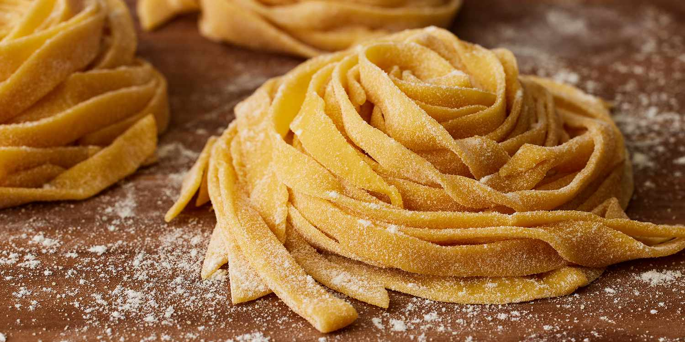

Fresh Pasta Dough

Description
Sometimes, boxed pasta just won't do. Fresh pasta is great for Bolognese, Alfredo, or with butter and cheese.
Ingredients
- Finely milled all purpose flour (tippo 00)
- Semolina flour
- Egg yolks
- Olive oil
- Water
Steps
- Combine all purpose flour and semolina flour
- On a clean work surface, create a mound of the flour and create a well in the center.
- Add the egg yolks to the well and break them apart with a fork
- Beginning slowly, use a fork to slowly incorporate the flour
- Once the egg yolks have taken on enough flour to not be too runny, move to using your hands to bring the
dough together
- You want the dough to feel slightly dry. It will hydrate while it rests. If it's too dry add a tablespoon of
water or olive oil
- Knead for 5-7 mintues, until pinching the dough feels like pinching your earlobe.
- Cover in plastic wrap and allow to rest for at least 30 minutes, up to a day in the fridge or a month in the
freezer.
Return Home